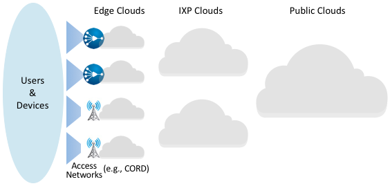

관점: 엣지를 향한 경쟁
소프트웨어화가 네트워크를 어떻게 바꾸고 있는지 살펴보기 시작하면, 가정, 기업, 그리고 모바일 사용자를 인터넷에 연결하는 접속 네트워크가 가장 급격한 변화를 겪고 있다는 점을 먼저 인식해야 한다. 2.8절에서 설명한 가정용 광섬유망과 셀룰러 네트워크는 현재 복잡한 하드웨어 장비 (예: OLT, BNG, BBU, EPC)로 구성되어 있다. 이러한 장비들은 역사적으로 폐쇄적이고 독점적인 성격을 띠었을 뿐만 아니라, 이를 판매하는 벤더들은 대개 각 장비 안에 광범위하고 다양한 기능을 한데 묶어 제공해 왔다. 그 결과 구축 비용은 높아지고, 운영은 복잡해졌으며, 변화는 더뎌졌다.
이에 대응해 네트워크 사업자들은 이러한 전용 장비에서 벗어나 범용 서버, 스위치, 접속 장비에서 실행되는 개방형 소프트웨어로 적극적으로 전환하고 있다. 이러한 움직임은 흔히 CORD라고 불리는데, 이는 Central Office Re-architected as a Datacenter의 약자다. 이름이 시사하듯이, 통신사 중앙국사 (또는 케이블 헤드엔드, 이 경우 약자는 HERD)를 클라우드를 이루는 대규모 데이터센터와 정확히 같은 기술로 구축하자는 발상이다.
사업자들이 이렇게 하려는 동기는 전용 장비를 범용 하드웨어로 대체해 비용을 절감하려는 이유도 일부 있지만, 더 큰 이유는 혁신 속도를 가속해야 할 필요성에 있다. 그들의 목표는 공공 안전, 자율주행차, 자동화 공장, 사물인터넷(IoT), 몰입형 사용자 인터페이스 같은 새로운 유형의 엣지 서비스를 가능하게 하는 것이다. 이러한 서비스는 최종 사용자에게, 그리고 더 중요하게는 사용자가 점점 더 많이 둘러싸고 사는 각종 기기에 대한 저지연 연결성의 이점을 누린다. 그 결과 그림 55와 같은 다계층 클라우드가 형성된다.
{kind=link}

그림 55. 새롭게 등장하는 다계층 클라우드는 데이터센터 기반 퍼블릭 클라우드, IXP가 호스팅하는 분산 클라우드, 그리고 CORD와 같은 접속 기반 엣지 클라우드를 포함한다. 전 세계적으로 IXP 호스팅 클라우드는 대략 150개 수준이지만, 엣지 클라우드는 수천 개에서 수만 개에 이를 것으로 예상할 수 있다.
이 모든 것은 기능을 데이터센터 밖으로 옮겨 네트워크 엣지에 더 가깝게 배치하려는 커져가는 흐름의 일부이며, 이러한 흐름은 클라우드 제공자와 네트워크 사업자를 정면으로 충돌하게 만든다. 저지연·고대역폭 애플리케이션을 추구하는 클라우드 제공자들은 데이터센터를 벗어나 엣지로 이동하고 있고, 동시에 네트워크 사업자들은 이미 존재하며 접속 네트워크를 구현하고 있는 엣지에 클라우드의 모범 사례와 기술을 도입하고 있다. 시간이 지나며 이것이 어떻게 전개될지는 단정할 수 없지만, 두 산업 모두 저마다의 장점을 가지고 있다.
한편으로 클라우드 제공자들은 대도시 지역에 엣지 클러스터를 촘촘히 배치하고 접속 네트워크를 추상화함으로써, 차세대 엣지 애플리케이션을 지원할 만큼 충분히 낮은 지연과 높은 대역폭을 갖는 엣지 거점을 구축할 수 있다고 본다. 이 시나리오에서 접속 네트워크는 단순한 비트 파이프로 남으며, 클라우드 제공자들은 자신들의 강점인 범용 하드웨어 위의 확장 가능한 클라우드 서비스 운영에 집중할 수 있다.
다른 한편으로 네트워크 사업자들은 클라우드 기술을 사용해 차세대 접속 네트워크를 구축하면, 접속 네트워크 안에 엣지 애플리케이션을 함께 배치할 수 있다고 본다. 이 시나리오는 이미 널리 분산되어 있는 물리적 거점, 기존 운영 지원 체계, 그리고 이동성과 보장된 서비스를 모두 기본적으로 지원한다는 장점을 지닌다.
이 두 가능성을 모두 인정하더라도, 고려할 가치가 있을 뿐 아니라 실제로 지향해 볼 가치도 있는 세 번째 결과가 있다. 바로 네트워크 엣지의 민주화이다. 이 발상의 핵심은 접속 엣지 클라우드를 누구나 사용할 수 있게 만들어, 기존의 클라우드 제공자나 네트워크 사업자만의 영역으로 남겨두지 않는 것이다. 이 가능성을 낙관할 수 있는 이유는 세 가지다.
접속 네트워크용 하드웨어와 소프트웨어가 범용화되고 개방되고 있다. 방금 이야기한 바로 그 점이 핵심적인 가능 요소다. 이것이 통신사와 케이블 사업자의 민첩성을 높여 준다면, 같은 가치는 누구에게나 제공될 수 있다.
수요가 존재한다. 자동차, 공장, 물류창고 분야의 기업들은 다양한 물리적 자동화 활용 사례를 위해 사설 5G 네트워크를 점점 더 원하고 있다. 예를 들어 원격 발레파킹이 차량을 주차하는 차고나 자동화 로봇을 활용하는 공장 바닥이 있다.
주파수 자원이 점점 이용 가능해지고 있다. 대표적으로 미국과 독일에서는 5G가 비면허 또는 완화된 면허 모델로 사용되기 시작했고, 다른 나라들도 곧 뒤따를 전망이다. 이는 사설 용도로 약 100~200MHz 정도의 스펙트럼을 5G에서 사용할 수 있게 됨을 뜻한다.
요컨대 접속 네트워크는 역사적으로 통신사, 케이블 사업자, 그리고 그들에게 독점 장비를 판매하는 벤더들의 영역이었지만, 접속 네트워크의 소프트웨어화와 가상화는 누구나 스마트 시티에서 서비스가 부족한 농촌 지역, 아파트 단지, 제조 공장에 이르기까지 접속 엣지 클라우드를 구축하고 이를 공용 인터넷에 연결할 수 있는 길을 열어 준다. 우리는 이것이 오늘날 WiFi 라우터를 배치하는 것만큼 쉬워질 것으로 기대한다. 그렇게 되면 접속 엣지가 새로운, 더 "엣지다운" 환경으로 확장될 뿐 아니라, 혁신의 기회가 있는 곳으로 본능적으로 향하는 개발자들에게 접속 네트워크를 개방할 가능성도 커진다.
더 넓은 관점
인터넷의 클라우드화에 대해 계속 읽고 싶다면 관점: 끝없이 이어지는 가상 네트워크를 참고하라.
접속 네트워크에서 진행 중인 변화를 더 알고 싶다면 다음 자료를 권한다. CORD: Central Office Re-architected as a Datacenter, IEEE Communications, 2016년 10월 및 Democratizing the Network Edge, SIGCOMM CCR, 2019년 4월.